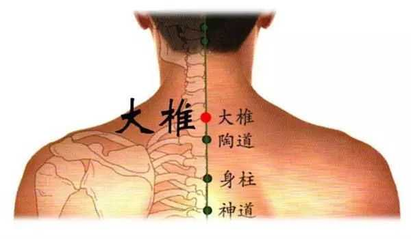

中医讲的四“海”并非是东海之流的海洋，而是髓海、血海、气海、水谷之海。这四海是人体气血精髓汇聚的重要位置。气血不足调理好四海自然会气血充足通畅，所谓百病气血生，气血好了自然身体健康延年益寿，所以四海是经络养生知识中重要的一个环节。
“海”是江河之水归聚的之处，经络学说中的“四海”也是十二经脉的经络之气归聚之地。
早在《黄帝内经》中就有记载：人有髓海，有血海，有气海，有水谷之海，凡此四者，以应四海也。
髓海位于头部；气海位于胸部；水谷之海位于上腹部；血海位于下腹部。各部位相互联系，其联系的主要经络也成为“气街”，既气运行的通道的意思。
四海掌管人体全身的功能、气血、津液。髓海是元神之府，是五脏六腑各生理功能的主宰；气海主司全身气的正常运行；水谷之海是气血化生之源，其消化吸收的营养物质不断的滋养人体，是物质基础；血海主要是冲脉，也称十二经络之海，是经络之根本，人体生命活动的原动力。
既然四海如此的重要，那么该如果调理四海，用四海补益气血、养生呢？其实四海在人体穴位上都有两到三个对应的腧穴。髓海对应的腧穴是百会穴、风府穴；气海对应大椎穴（有些文献称“柱骨”）、人迎穴；血海对应大杼穴、上巨虚穴、下巨虚穴；水谷之海对应气冲穴、足三里穴。

在经络养生的运用中，如果是气血不足，可以采用气海血海对应的穴位，如果是健脾胃可采用水谷之海对应的穴位；如果是头晕眼花耳鸣甚至各种精神上的困扰都可以采用髓海的对应穴位。还有很多能对应的调理不一一列举。总之对应相应的四海之一调理相应部位的不适，运用相应的穴位均可有奇效。
选取了想对应的穴位，可根据穴位本身特点入手进行艾灸、推拿、拔罐、刮痧、针灸等手法。比如百会穴、风府穴，因在头部有头发阻挡尽量不选择艾灸。
四海就像是经络的总开关，调理好了强身健体增强抵抗力。在中医经络养生的运用中，因其易理解、好判断的特点，一直被老中医运用。


推动健康产业发展 助力全民健康生活
加入我们，打造 [ 千城万店 · 健康万民 ]
Promote the development of the health industry
上海运营总部：上海青浦区汇龙路695号C栋8楼(叶迪大厦)
华东运营中心：江苏省昆山市花桥镇绿地大道231弄2号楼
西南运营中心：成都市高新区环球中心E1-1212
欢迎关注百龄足官方微信或拨打400客服电话详询！
Welcome to Bailingzu official or call customer service phone for detailed inquiries
 商务合作
商务合作
 在线咨询
在线咨询